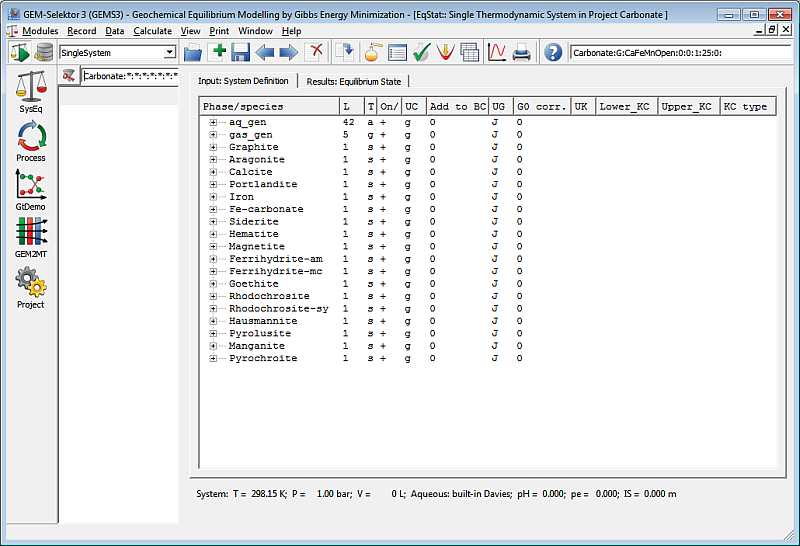
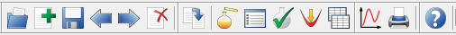

Previous Page Back to Start Page
(7) A window appearing below means
that
your project has been opened or created and now you are ready to model
geochemical
equilibria. In
the upper right corner you see a key of SysEq record about to becreated in
the project database; this record key uniquely identifies your system
(identical
record keys are not allowed in GEM-Selektor databases).

If the project is empty (newly-created) then, over this window, you
will see a modal dialog, in which GEM-Selektor asks you to give a name to
the
newly-created
system, as well as its temperature
and pressure of interest.

By reading comments or the help page, you can learn the meaning of each of eight fields of this SysEq record key, under which your new system and equilibrium state will be stored in the "Carbonate" project database. Let us call the new system "CaFeMnOpen" and assume that it exists at ambient conditions (1 bar pressure, 25 oC temperature). Type the name (as shown on the dialog), leave "0" in the field below the name, and press "Ok" to proceed.
(8) Immediately, an "Input Recipe Dialog" pops up:
This dialog provides several means of putting together the bulk
composition of chemical system, opening windows with input and output data
for chemical equilibrium speciation in this system, as well as some other
settings and tweaks.
If you close the Recipe dialog, you can always open it again by clicking
on the "Open Recipe Dialog..." toolbar button on the Single
Thermodynamic
System
Dialog toolbar (shows tooltips). This is the eighth button (orange bottle)
in the toolbar, see below.

In
principle, the only thing you have to do in order to complete the
chemical system definition is to specify a "recipe" for the total bulk
composition of the system. The easiest way to do it is to open the Recipe
Dialog (if you closed it), and proceed to the next page.
Back
to main GEM-Selektor page